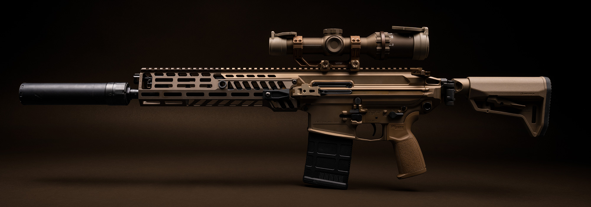
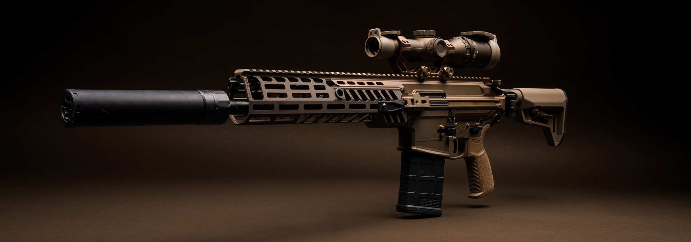
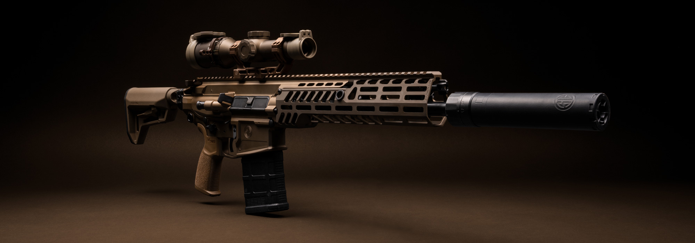
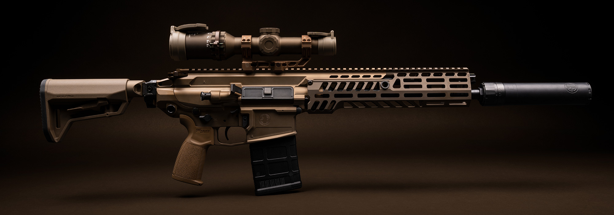
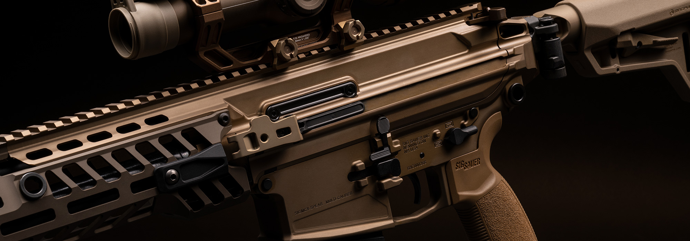
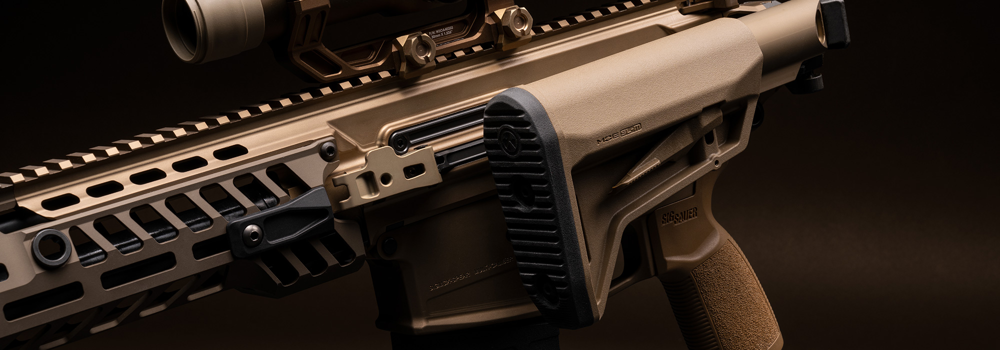
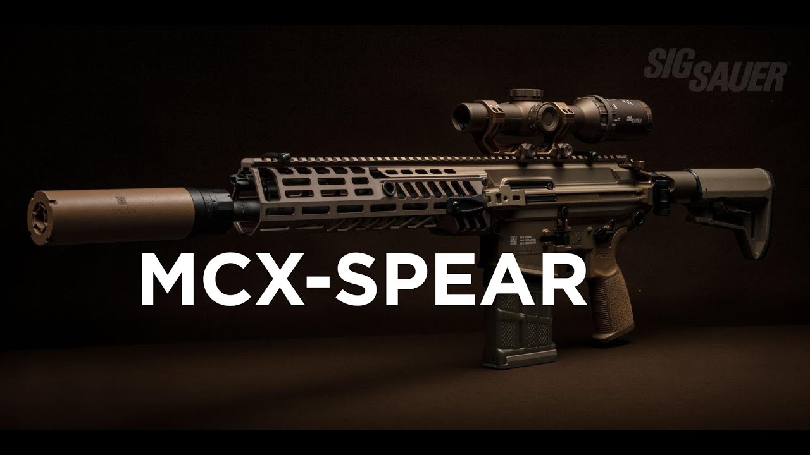
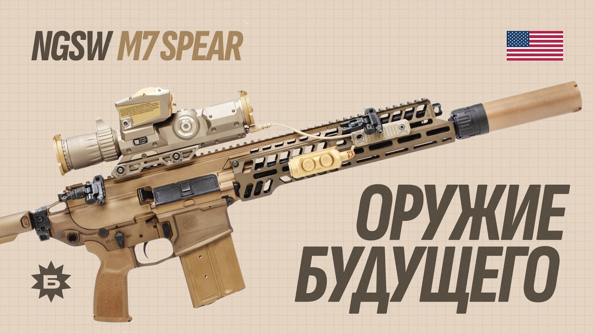

KARATEL
SIG MCX‑SPEAR · Coyote Tan · NGSW‑платформа




ПОТЯНИ — ОСМОТРИ СО ВСЕХ СТОРОН
О сборке
Платформа NGSW перенесла в коммерческую линейку то, что раньше существовало только в программе замены штатного оружия: короткоходный газовый поршень, вращающийся затвор и калибр, рассчитанный на дистанцию, где обычный промежуточный патрон уже сдаёт. Обвес здесь не витринный — прицел, глушитель и покрытие подобраны под одну задачу, а не под фотосессию.
Эта сборка не про ближний бой. Патрон тяжелее NATO 5.56, магазин вмещает меньше патронов, чем у M4 — но взамен винтовка даёт дальность и пробивную способность, которых лёгкий калибр не обеспечивает. Прицел переменной кратности 1–16× рассчитан не на короткую дистанцию, а на уверенную работу на 300–500 метрах, с запасом до 800. Кастом обошёлся в районе шести тысяч долларов и получил доработанный глушитель — это не полочный экземпляр, а инструмент под конкретную задачу.
- ПЛАТФОРМА
- SIG MCX‑SPEAR
- КАЛИБР
- .277 SIG Fury (6.8×51) · конверсия 7.62×51 / 6.5CM
- СТВОЛ
- 330 мм (13″)
- ДЛИНА
- 866 мм (34.1″)
- МАССА
- 3.8 кг с магазином
- УСМ
- двухступенчатый матчевый спуск
- ГАЗБЛОК
- регулируемый, 2 положения
- ПРИКЛАД
- 6‑позиционный, складной
- ПРИЦЕЛ
- LPVO 1–16×, FDE
- ГЛУШИТЕЛЬ
- SIG SRD, резьбовое крепление
- ПОКРЫТИЕ
- Cerakote, Coyote Tan


В деле

